Running a pegboard session
A step-by-step guide for running the grooved peg test. No technical background needed — if you can follow a lab protocol, you can run this.
Everything happens on the small touchscreen attached to the Raspberry Pi. You tap the screen; there is no keyboard or mouse to find.
What this equipment does
The participant moves 25 pegs into a pegboard. The pegboard sits on a scale, so every peg makes the total weight go up by a small step. The system watches for those steps.
Each time it sees a peg go in, it sends a signal to the stimulator, which delivers the taVNS stimulation. It also records everything: the weight over time, when each peg went in, and when each stimulation fired.
You do not have to time anything or press anything during the task. Your job is to set it up, press start, and press stop at the end.
The parts, and what each one is called
You don't need to understand how these work, but you will see these names on screen and in this guide, so it helps to know what is what.
The pegboard end
Load cell — the scale underneath the pegboard. A metal bar that bends very slightly under weight; that bending is what gets measured. It is sensitive enough to see a single peg (about 2.5 grams) but that also means it reacts to knocks and leaning on the table.
HX711 — the small chip that reads the load cell and converts the bending into a number. It takes a fresh reading about 85 times a second.
ESP32-S3 — the small circuit board (about the size of a stick of gum) bolted near the pegboard. This is a microcontroller: a tiny computer that does one job continuously. Its job is to read the scale, decide when a peg has genuinely gone in, and fire the stimulator. It, not the Raspberry Pi, makes the decision — so stimulation happens even if the screen freezes.
You'll see "ESP32" on the status light. That's this board.
The computer end
Raspberry Pi — a small, complete computer, roughly the size of a deck of cards, in a case near the screen. It runs the display you tap on, and it saves all the data onto its own drive. It is a real computer running a real operating system, which is why it needs shutting down properly rather than unplugging (see the end of this guide).
Touchscreen — the small screen attached to the Pi. Everything you do happens here. There is no keyboard or mouse; an on-screen keyboard appears when you need to type.
NVMe drive — the Pi's storage. Unlike most Raspberry Pis, which run from a small memory card, this one has a proper 1 terabyte solid-state drive inside it. That is where the operating system lives and where all your recordings are saved. There is a lot of room: a session is a few hundred kilobytes, so the drive holds effectively unlimited sessions. The screen shows the free space in the strip along the middle so you can keep an eye on it anyway.
The cables between them
USB cable — carries the scale readings from the ESP32 to the Raspberry Pi, and also powers the ESP32. If this is loose, the ESP32 light goes red and no data arrives.
Stimulation wire — a thin single wire from the ESP32 to the Raspberry Pi, plus a shared ground wire. When the ESP32 fires the stimulator, it also puts a voltage on this wire, and the Pi watches for it. That's how the recording contains proof of what the participant actually received, rather than just what the system intended.
GPIO26 — the name of the specific socket on the Raspberry Pi that the stimulation wire plugs into. "GPIO" means general-purpose input/output: the Pi has a row of 40 numbered pins along one edge, and this is number 26. The number matters only so that you plug the wire into the right one; it's on the status light so you can check at a glance.
Stimulator — the Spark Biomedical taVNS device that delivers the stimulation to the participant. The ESP32 triggers it directly over its own cable.
How they fit together
pegs → pegboard → load cell → HX711 → ESP32-S3 ──USB──→ Raspberry Pi → touchscreen
│ ↑
│ │
└── stimulation wire ┘ (into GPIO26)
│
└──→ Spark stimulator → participantThe important thing to take from this: the ESP32 runs the experiment, and the Raspberry Pi records it. They are two separate computers doing two separate jobs, joined by two cables — and each of the two status lights on screen is telling you about one of those cables.
Before the participant arrives
Turn it on
Power up the Raspberry Pi and the pegboard hardware. On the desktop you'll see three icons:
| icon | what it does |
|---|---|
| Pegboard | opens the session screen — this is the one you use |
| Pegboard Data | opens the folder on the Pi's drive where recordings are saved |
| Shut Down Pegboard | turns the Pi off safely at the end of the day |
There is also a ⏻ POWER button on the session screen itself, which does the same thing without going back to the desktop.
Double-tap Pegboard. The session screen opens full-screen. Give it about ten seconds.
Turning the screen
The screen works either way up — tall (upright) or wide (sideways) — and the layout rearranges itself to fit. Use whichever suits how the cart is set up.
Double-tap Rotate the Screen on the desktop. It switches to the other way up and tells you which it chose. It remembers, so it comes back the same way next time you turn the Pi on.
Every screenshot in this guide shows both: upright on the left, sideways on the right. They are the same screen with the same buttons in the same order — only the arrangement differs.
Check the lights
Look at the bottom-right corner of the screen. There are three small lights:
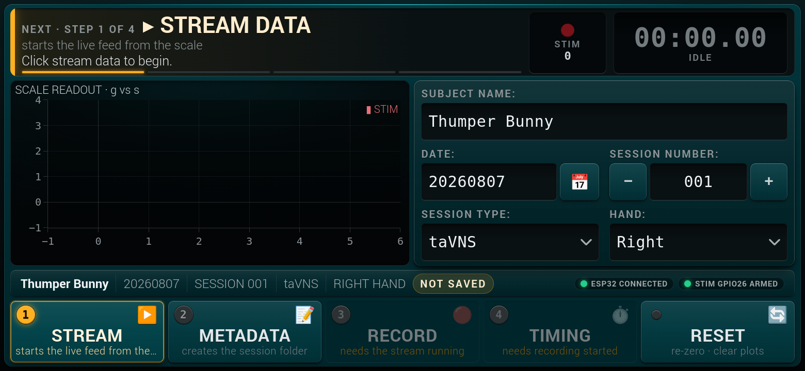
| light | meaning |
|---|---|
| 🟢 ESP32 | the USB cable is good — the ESP32 microcontroller on the pegboard is talking to the Raspberry Pi |
| 🟢 STIM GPIO26 | the Pi is watching pin GPIO26, so stimulation will be recorded |
| 🟢 SELF-TEST | every automatic check of the equipment passed — see below |
| 950 GB | free space left on the Pi's drive. It will be a long time before this matters |
A green dot on its own means that light is fine. When something is wrong the light turns red or amber and spells out the problem — for example ESP32 NOT CONNECTED, STIM GPIO26 NOT CONNECTED, or SELF-TEST 2 FAILED. So short and green is good; a light with words on it is asking for attention.
All three must be green before you run a participant.
If ESP32 is red, the USB cable between the ESP32 board and the Raspberry Pi is loose or unplugged. Reseat it at both ends and wait a few seconds.
If STIM GPIO26 is red, the Pi cannot watch the stimulation wire, so stimulation would not be recorded even if it fired. Check the thin wire is pushed firmly onto pin 26 of the Pi's 40-pin header, and that the ground wire beside it is also seated.
Note the difference between the two: a red ESP32 light means you will get no data at all, which is obvious immediately. A red STIM light means everything looks fine — the chart moves, pegs are detected, the participant is even being stimulated — but the record of that stimulation is missing. That one is much easier to miss, which is why it has its own light.
Why this matters. A red STIM light does not stop the session from running. It stops the evidence from being recorded. If you run a participant with it red, you will have their movement data but no proof of what stimulation they received, and there is no way to recover that afterwards.
The self test
The two lights above check the cables. The SELF-TEST light checks the equipment itself.
It runs automatically whenever the session screen starts, takes about three seconds, and covers around twenty things — that the load cell amplifier is answering, that it is reading fast enough, that an untouched pegboard is sitting still rather than drifting, that the stimulation trigger is not stuck on, that the Pi can actually write to its drive, and so on.
| the light says | what to do |
|---|---|
| 🟢 SELF-TEST | nothing. Everything passed |
| ⚫ SELF-TEST NOT RUN | tap it, then tap Run the self test |
| 🟠 SELF-TEST 1 WARNING | tap it and read the amber line. Usually worth mentioning, rarely worth stopping for |
| 🔴 SELF-TEST 2 FAILED | tap it and read the red lines. Do not run a participant until you know why |
Tap the light to open the full list. Each check has its own small light, a plain-English name, and the measurement it took. A green one shows the range it was allowed to be in; a red one explains what it means and what it affects.
Some of these catch faults that are otherwise invisible. Load cell sample rate is the clearest example: if the amplifier gets strapped to its slow setting, everything still works — the chart moves, pegs are detected, stimulation fires — but every participant is stimulated about three quarters of a second later than the protocol says, and nothing else on the screen would ever tell you.
Two checks that say "not run"
Near the bottom of the list, Trigger pulse sent and Trigger wire to the Pi are usually gray and say not run. That is normal and it does not count against the green light.
They are the only way to prove the thin trigger wire between the pegboard and the Pi is intact — and the only way to test a wire that carries stimulation is to send some. Pressing Test the trigger wire makes the pegboard fire a real pulse, 50 milliseconds long, about a twentieth of the one a peg produces. The Spark stimulator will fire if it is connected and switched on.
So: take the electrodes off the participant first. The screen asks you to confirm before it sends anything.
Worth doing at the start of a day, or any time the wiring has been disturbed — it is the check that catches the fault where stimulation is still delivered but silently stops being recorded.
If it refuses
If you ask for a self test while a task is running, the board says no and the screen tells you so. That is deliberate: the test reads the scale, and doing that mid-task would delay the participant's stimulation. Stop the run first.
Running a session
The screen walks you through it. The large text along the top always tells you what to do next, and the buttons along the bottom are numbered 1 2 3 4 in the order you press them.
A button you cannot use yet is dimmed and says why underneath — for example "needs the stream running". That's normal, not an error.
Step 1 — tap STREAM
This starts the live feed from the scale.
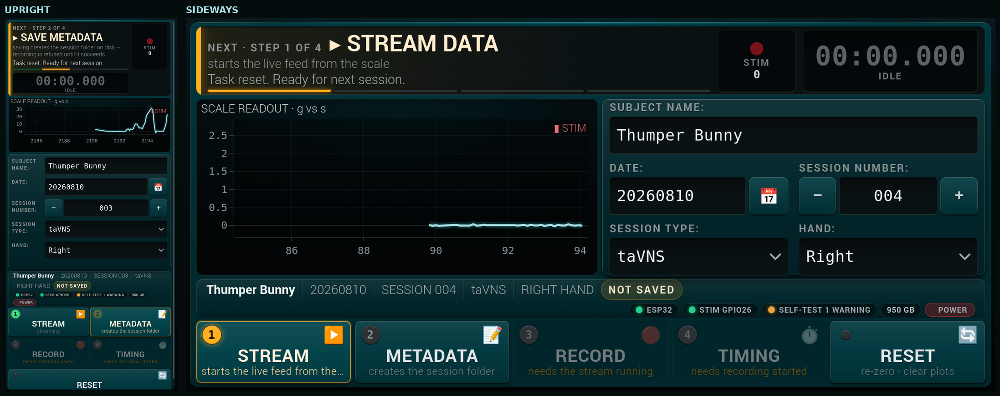
The left-hand chart begins moving. With nothing on the pegboard it sits flat near zero — a flat line is correct, not a fault.
If nothing moves, check the ESP32 light again.
Step 2 — fill in who this is, then tap METADATA
Four things to set. Tap any of them to change it.
Subject name — tap it and a keyboard appears on screen. Type the name, then tap DONE. (SHIFT gives capitals, ⌫ deletes, CANCEL leaves it unchanged.)
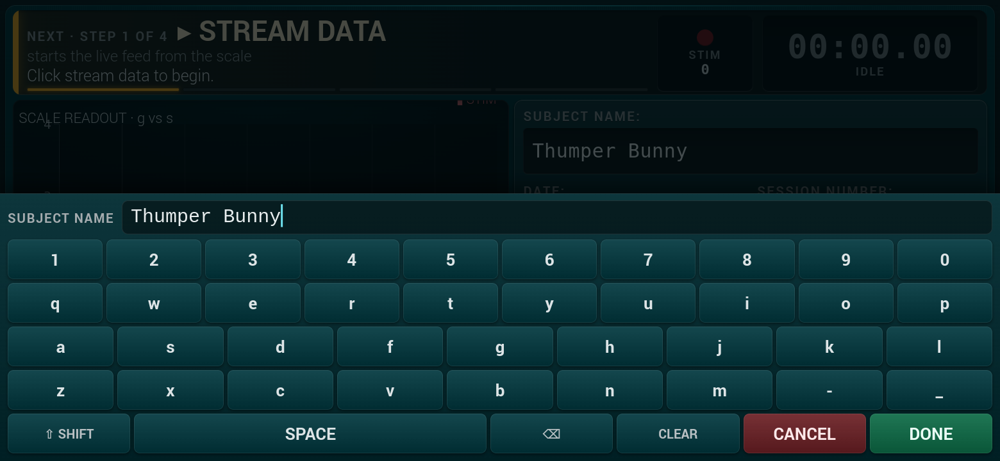
Date — tap the 📅 button next to it for a calendar. Today is already selected and outlined, so usually you can leave it alone. Future dates are grayed out on purpose.
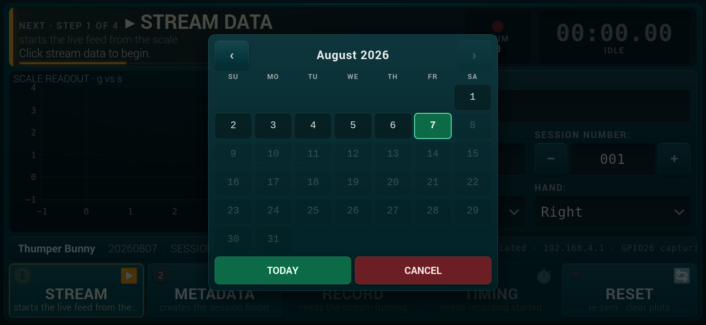
Session number — use the − and + buttons. This counts up automatically after each session, so normally you don't touch it.
Session type and Hand — tap to choose. Remember to switch Hand when the participant swaps hands.
Then tap 2 METADATA. The top of the screen should say metadata save successful, and the badge in the strip changes from NOT SAVED to SAVED.
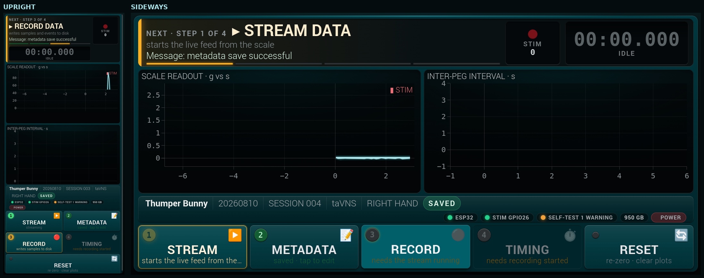
If the session number turns red, a recording with those exact details already exists. Tapping save will offer to use the next free number instead — take that option. The other choice overwrites the earlier recording permanently, so only use it if you are certain.
Step 3 — tap RECORD
Now it is writing to disk. The screen border turns red and the clock resets.
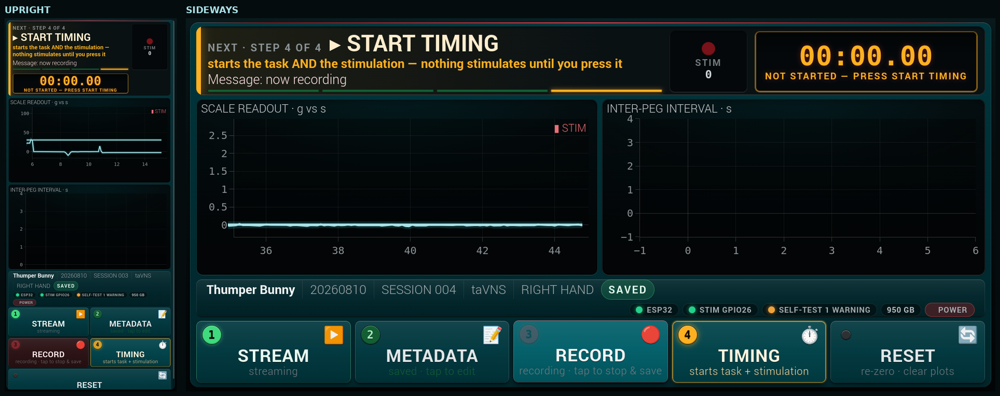
Nothing is being timed yet. You can still settle the participant.
Step 4 — tap TIMING, and the participant begins
This is the one to remember. Tapping 4 TIMING does two things: it starts the clock, and it enables stimulation.
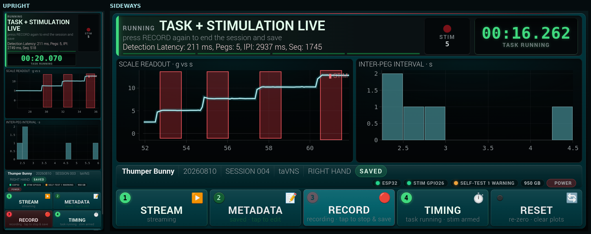
The top of the screen changes to TASK + STIMULATION LIVE and the clock turns green and starts counting.
If you forget this step, the session still records weight and movement, but no stimulation is delivered at all. The task runs, the data looks plausible, and the participant receives nothing. This is the single easiest mistake to make, which is why it is step 4 of 4 with its own warning.
Now the participant works through the pegs. You don't need to do anything.
As they go, you'll see:
- the weight chart climbing in steps, one per peg
- red bands on the chart marking each stimulation
- the STIM counter in the top-right counting up
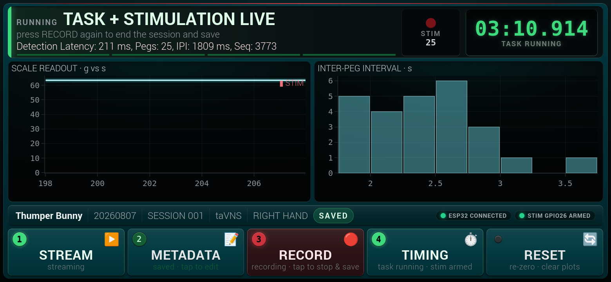
The STIM counter should match the number of pegs placed. If pegs are going in but the counter isn't moving, stop and check the stimulation wire.
Step 5 — tap RECORD again to finish
When the participant places the final peg, tap RECORD again.
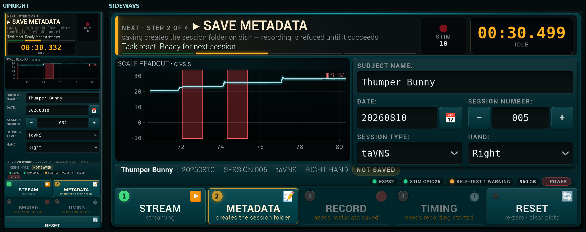
The screen confirms Data saved! and the session number moves on ready for the next run. That's it — the recording is on disk.
Stop promptly. The system does not stop by itself, on purpose: that way a knock to the table can never end a run early. But it means any delay after the last peg is recorded as part of the session.
Running another session
For the same participant with the other hand:
- Take all the pegs off the board.
- Tap RESET/TARE — this re-zeroes the scale with the board empty. Do this with nothing on the board.
- Change Hand.
- Then steps 2 → 3 → 4 again: METADATA, RECORD, TIMING.
The session number will already have moved on for you.
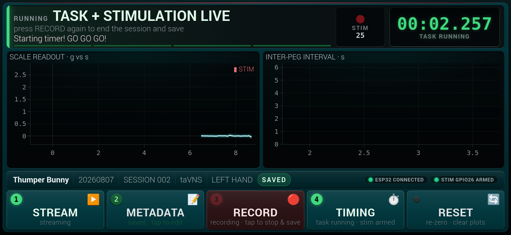
Finishing for the day
On the screen, tap the red ⏻ POWER button on the right of the middle strip. You'll be asked which of two things you want:
| choice | what happens |
|---|---|
| Close the display only | quits this screen. The Pi stays on. Reopen any time with the Pegboard icon. Use this if you just want the screen out of the way. |
| Shut down the whole Pi | powers the computer off completely. Use this at the end of the day. |
| Cancel | nothing happens |
Either way, if a recording is still running it is stopped and saved first, and the stimulator is switched off.
There is also a Shut Down Pegboard icon on the desktop that does the same full shutdown, for when the display isn't open.
Then wait before unplugging
After choosing to shut down, wait until the green light on the Raspberry Pi itself stops blinking. It takes a few seconds. Then it is safe to switch off the power.
Please don't just pull the plug. The Pi is a computer, and it may still be writing to its drive for a moment after you finish. Cutting power mid-write can leave a recording incomplete, or in a bad case leave the Pi unable to start next time.
The drive in this Pi is a solid-state NVMe drive rather than the memory card most Raspberry Pis use, which makes it considerably more robust — but "more robust" is not "safe", and the shutdown button costs you five seconds.
There is a second reason: shutting down properly also tells the pegboard hardware to stop, so no stimulation can be delivered after you have finished.
Where the data goes
Everything is saved on the Pi's own 1 TB drive — nothing goes to the internet and nothing is stored on a removable card.
Double-tap Pegboard Data on the desktop. Recordings are filed as:
participant name → date → session numberfor example ThumperBunny / 20260807 / 001.
Each session folder holds five files. You don't need to open them — they are for analysis later — but the useful one to know is session.json, which holds the details you typed plus a summary of the run.
Never rename or move these folders. The names are how the analysis software finds them.
Copying the data onto another computer
The recordings live on the Pi. To work with them — or to back them up — you copy them onto a normal computer with a network cable. This works the same on Windows, on a Mac, and on Linux.
Nothing is ever deleted from the Pi. This makes a copy. The Pi stays the original until somebody deliberately clears it.
What you need, once
| A network cable | An ordinary Ethernet cable between the Pi and the computer |
| The file | tools/fetch_sessions.py from the pegboard folder |
| Python | Already on a Mac or Linux. On Windows, install it once from python.org — tick "Add Python to PATH" during setup |
| The Pi's password | You will be asked for it the first time only |
Nothing else needs installing. No extra packages.
Setting the computer's network address — one time only
The Pi always answers at the address 192.168.1.100. The other computer has to be on the same stretch of network to reach it, and it will not arrange that by itself over a direct cable.
On Windows, the Desktop shortcut below does this for you and undoes it afterwards, so there is nothing to set up and nothing left changed. To do it by hand instead, or on a Mac, someone technical needs to do this once per computer:
Windows — Settings → Network & Internet → Ethernet → Edit IP assignment → Manual → IPv4 on. IP address
192.168.1.50, Subnet mask255.255.255.0. Leave gateway and DNS blank.Mac — System Settings → Network → Ethernet → Details → TCP/IP → Configure IPv4: Manually. Same address and mask.
If this has not been done, the script says so in plain words and stops without changing anything. It is the most common reason it does not work first time.
The Windows shortcut
On the study computer there is a setupInterfaceForPiDataTransfer icon on the Desktop. Double-click it and it does the whole job in one go:
- Windows asks permission to change the network adapter — click Yes.
- It puts this computer on the Pi's stretch of network.
- It checks the Pi is answering, and says so in plain words if it is not.
- It copies the data, asking you where to put it.
- It puts the network back the way it was, on automatic, under the adapter's original name — so the computer is left as it was found.
Step 5 happens whether the copying worked or not. A failed attempt cannot strand the computer on a fixed address with no way back onto the internet.
The icon is a copy of tools\fetch-sessions-windows.cmd. The copying itself is still fetch_sessions.py, the same on every platform; the shortcut only does the two Windows-specific steps Python cannot do without administrator rights.
Copying the data
- Plug the network cable into both the Pi and the computer. A small light should come on at each end.
- Switch the Pi on, if it is not already. Wait about a minute.
- Run the script. On Windows, double-click the
setupInterfaceForPiDataTransfericon on the Desktop, which sets the network up first and puts it back afterwards. Otherwise double-clickfetch_sessions.py, or from a terminal:
`` python3 tools/fetch_sessions.py ``
A window opens and tells you what it is doing.
- The first time only, it offers to set things up so you never need the password again. Answer Y, then type the Pi's password when asked. It will not appear on screen as you type — that is normal. You will not be asked again on this computer.
- Choose where to put the data. A normal folder-picking window opens. Pick or create a folder — somewhere in Documents is fine. It remembers your choice for next time.
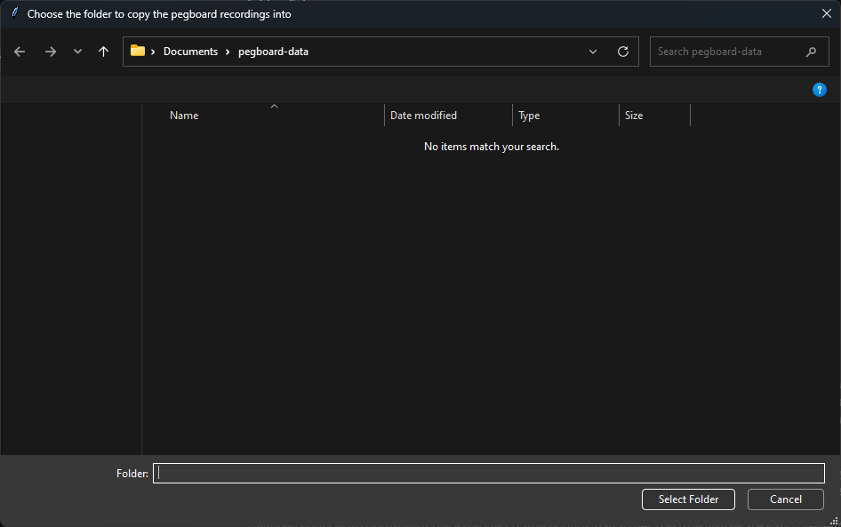
- Choose which recordings to copy. A second window lists everything the Pi has that this computer does not, one row per session with its date and how many files it holds. Everything is ticked, so if you want all of it — which is usual — just press Copy these. Untick anything you do not want.
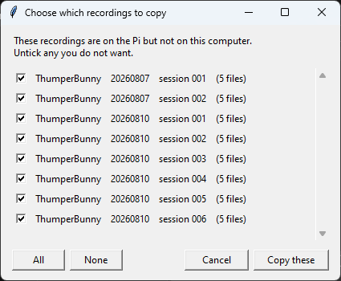
- Wait. Each session is checked after it arrives to make sure it came across intact. A session is a few hundred kilobytes, so this is quick — seconds, not minutes.
A bar along the bottom shows how far along it is:
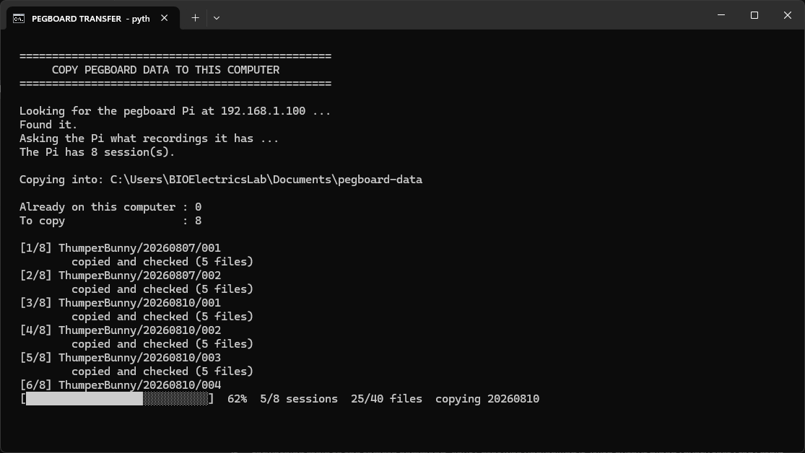
- Read the summary. It tells you how many sessions were copied, how many were already there, and where it put them.
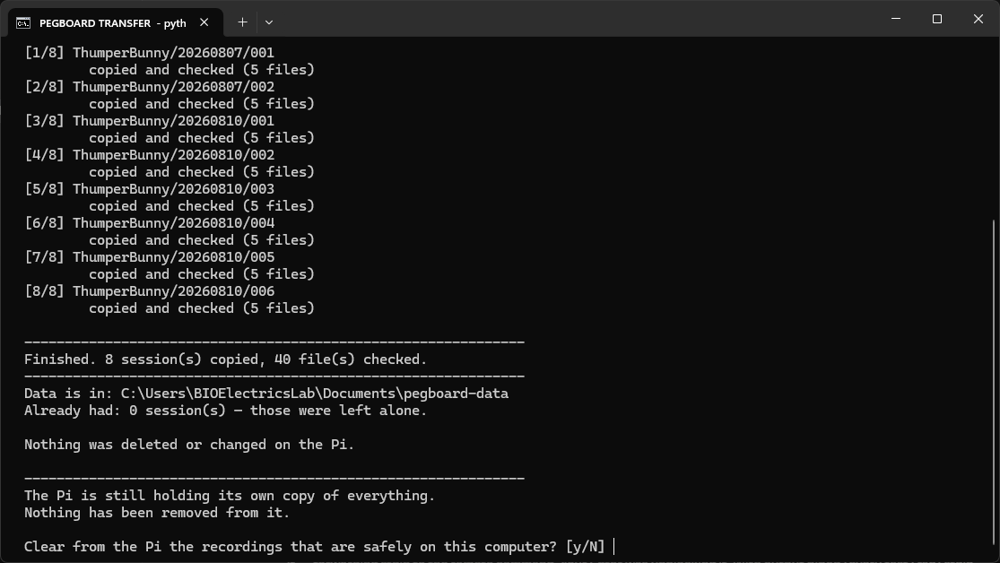
- It asks whether to clear the Pi. Answer no unless you have been told otherwise — see below. Pressing Enter answers no.
- Press Enter to close the window.
What it does that is worth knowing
It never copies the same session twice. Anything already on the computer is left alone. So you can run it after every session, or once a week — it only ever fetches what is new.
It checks every file after copying it. Not just the size — a full fingerprint of the contents, compared against the Pi's. If a file arrives damaged, that session is removed rather than left half-copied, and the summary says so. Run it again and it will fetch it properly.
A session never appears half-copied. It is assembled out of sight and only put into place once it has been checked.
It is safe to run twice. If everything is already copied it says so and does nothing.
It is safe to interrupt. Close the window and nothing is left in a bad state; run it again and it picks up the rest.
Clearing the recordings off the Pi
At the end it asks whether to remove from the Pi the recordings that are now on this computer. The answer is no unless someone has told you otherwise. The Pi is the original copy, and the point of this tool is that there are two.
Pressing Enter answers no. If you do say yes, it lists exactly what it is about to remove and asks you to type the word DELETE — nothing happens until you do, and a stray keystroke cannot do it.
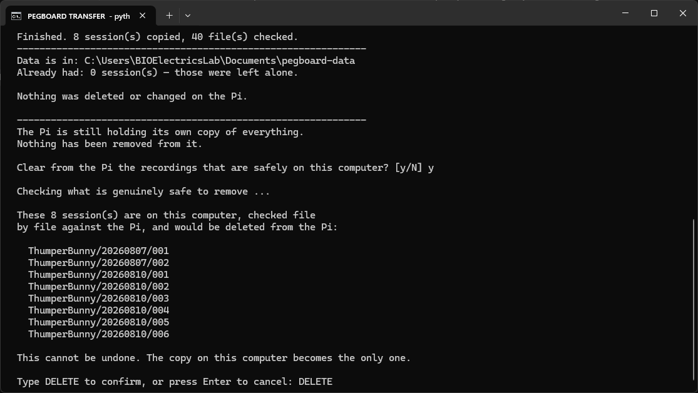
Before removing anything it checks every file against the Pi again, so it is only ever deleting recordings it has just proved are here and intact. It will refuse to remove a session that was never closed properly, because that one may still be in use. Anything it refuses is listed with the reason and left alone.
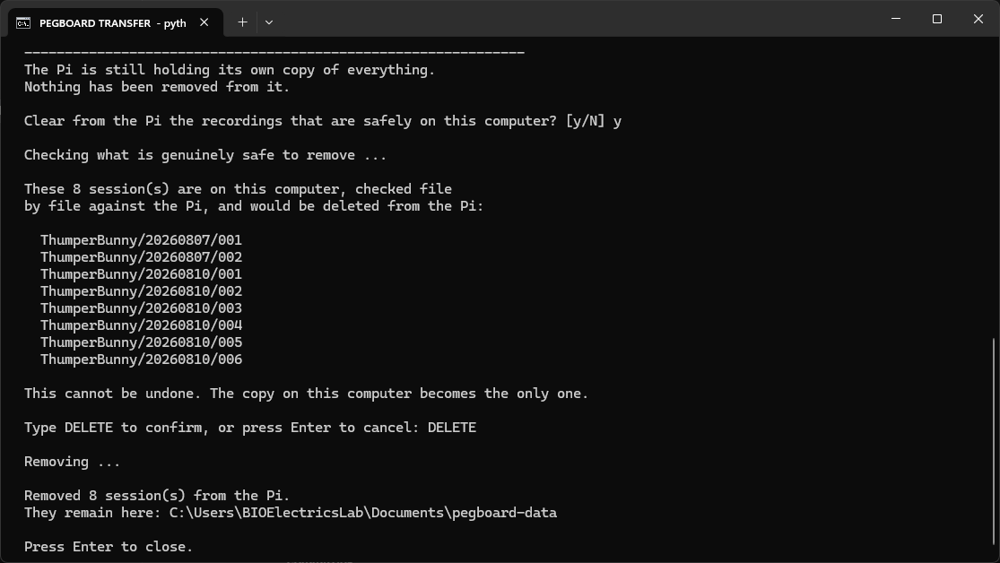
It removes the recordings themselves and leaves the subject and date folders behind, empty. That is deliberate: the next session recorded on the Pi lands where it always did.
It cannot be undone. After that, what is on this computer is the only copy, so it should not be done until that copy is somewhere backed up. Two copies on one computer is not a backup.
Checking older copies are still good
Files on a disk can go bad over time, and a copy made months ago is not re-checked on every run — that would get slower and slower as the archive grows. To check everything you already have against the Pi:
python3 tools/fetch_sessions.py --verifyIt lists any session that no longer matches. It does not delete anything: the Pi still has a good copy, so delete the local folder it names and run the script again to fetch a clean one.
If it does not work
The script names the problem rather than showing an error code. The three you are likely to see:
| what it says | what to do |
|---|---|
| Cannot see the pegboard Pi | Check the cable at both ends, check the Pi is on, and check the computer's address has been set as above |
| This computer is missing the tools needed | On Windows, ask IT to turn on "OpenSSH Client" in Settings → Apps → Optional features |
| Could not read the recordings | The Pi answered but would not let us in. Usually the password was mistyped — try again |
If it fails, nothing has been copied and nothing has been changed on either machine. It is always safe to try again.
When something looks wrong
| what you see | what to do |
|---|---|
| ESP32 light is red | reseat the USB cable between pegboard and Pi, wait 10 s |
| STIM GPIO26 light is red | check the thin stimulation wire is firmly on its pin. Don't run a participant until it's green |
| chart is flat and not moving | make sure you tapped 1 STREAM; if you did, check the ESP32 light |
| chart looks like random noise near zero | this is normal with an empty board — it's just the scale's sensitivity |
| pegs going in, but no red bands and STIM stays at 0 | stimulation is not reaching the system. Stop, check the stimulation wire, start a new session |
| session number is outlined in red | that recording already exists. Choose use the next free number |
| screen is frozen or blank | tap ⏻ POWER → Close the display only, then reopen with the Pegboard icon. Your saved data is safe |
| weight looks wrong or drifts | take everything off the board and tap RESET/TARE |
| nothing works and you're stuck | shut down with the icon, wait 10 s, power back on |
| anything not in this table | photograph the screen and report it — see below. Don't improvise a workaround |
Data already saved is never lost by restarting the screen. Each session is written to the card as it goes, not held in memory until the end.
Which part is responsible for what
When something goes wrong it saves a lot of time to know which half of the system is at fault. The two halves fail in completely different ways.
The pegboard end (load cell → HX711 → ESP32) runs the experiment. It reads the scale, decides a peg went in, and fires the stimulator. It does this whether or not the Raspberry Pi is even switched on.
The Raspberry Pi end records it. It draws the charts, saves the files, and watches the stimulation wire. It never decides anything about the task.
The practical consequence: if the screen dies mid-session, the participant is still being stimulated — the pegboard hardware carries on regardless. And the reverse: if the pegboard hardware stops, the screen will look fine but nothing will move.
Symptom → what is actually wrong
| what you see | the part at fault | what it means | who fixes it |
|---|---|---|---|
| Weight reads a few grams off with an empty board | load cell — drift, normal | not a fault | you: RESET/TARE with the board clear |
| Weight jumps when someone leans on the table | load cell — it is that sensitive | not a fault | you: keep the table clear, re-tare |
| Weight drifts steadily during a session | load cell — temperature or something resting on the board | not a fault | you: clear the board, re-tare, restart the session |
| Weight is wildly wrong — 200 g for one peg, or negative | load cell or HX711 — likely a loose connector or a knocked mount | the scale needs recalibrating | engineering. Stop, don't run participants |
| Pegs go in but aren't detected, or one peg counts as two | ESP32 detection settings | the sensitivity thresholds are off, or the board is being knocked | engineering. Report it with the session number |
| Nothing on the chart at all, ESP32 light red | USB cable or ESP32 | the Pi is hearing nothing | you: reseat the USB cable. If still red, engineering |
| Chart works, but STIM light red | stimulation wire / GPIO26 on the Pi | stimulation may still be firing — it just is not being recorded | you: reseat the thin wire on pin 26. Don't run participants until green |
| Chart and red bands fine, but the participant feels nothing | Spark stimulator or its electrodes | the trigger is reaching the stimulator; the problem is past that point | you: check electrode contact and the stimulator's own settings |
| Screen frozen, but pegs are still being detected | Pi display software only | the pegboard hardware is unaffected and stimulation continues | you: close the display and reopen. Data already saved is safe |
| Cannot save a session / "already exists" | Pi, filing only | nothing is broken; the name is taken | you: use the next free session number |
| Pi will not start at all | Pi | pegboard hardware is fine | engineering |
The rule of thumb
- Anything about weight or peg detection → the pegboard end. Nothing on the Pi is broken, and restarting the Pi will not help.
- Anything about charts, saving, or the screen → the Pi end. The pegboard hardware is fine and the participant is unaffected.
- Anything about the stimulation itself reaching the participant → the Spark stimulator and electrodes, which sit past both.
A note on calibration
The scale's calibration — how a bend in the load cell becomes a number in grams — is set in the ESP32's software, not on the Pi and not on this screen. So:
- Taring (re-zeroing with an empty board) is a normal operator action. Use RESET/TARE freely, and always with the board clear.
- Recalibrating (making a known weight read correctly) is an engineering job. If a single peg is not reading roughly 2.5 grams, that is a calibration problem — report it rather than working around it.
A run made on a mis-calibrated scale can look perfectly normal and still be unusable, because peg detection depends on the size of the weight step.
If something breaks — what to write down
If you hit a problem you can't clear with the table above, stop and report it rather than working around it. A session run on a half-working rig can look completely normal and still be unusable.
What makes a report fixable is knowing what the system was doing at the time. Please note these five things — a photo of the screen covers most of them:
- What you were doing — which step, which button you'd just tapped.
- What the two lights showed — ESP32 and STIM GPIO26, green or red.
- The exact wording along the top of the screen. It usually names the problem directly. "Microcontroller not reachable" and "data not streaming" are different faults with different fixes.
- Participant, date and session number from the strip across the middle — this identifies the recording on disk.
- Whether any data was saved — did you see Data saved! before it went wrong?
A photo of the whole screen is the single most useful thing you can send. It captures the lights, the message, the charts and the session details at once.
Also worth noting
- Was anything unplugged, moved, or knocked? Including the table.
- Did it work earlier the same day? "It worked this morning" narrows things down enormously.
- Is it every time, or occasional? Intermittent faults and constant faults have very different causes.
- Roughly what time it happened. The Pi keeps its own detailed log, and a time lets us find the right moment in it.
Don't do these
- Don't delete or rename a session folder that looks wrong. Even a partial recording usually says what went wrong. Note the name and leave it.
- Don't re-run over the top of it. If the system offers to use the next free session number, take it.
- Don't pull the power to reset it. Use Shut Down Pegboard, wait for the light, then power back on.
The technical detail is already saved for us
You don't need to find any of this — it's recorded automatically, and mentioning the time is enough for us to retrieve it:
- the Pi logs everything the software did, continuously
- every session folder holds
raw_udp.log, a word-for-word copy of everything the pegboard hardware said during that run session.jsonin each folder records which cables were connected and whether stimulation was being watched
So a report like "3:20pm, second session, STIM light was red, top of screen said stimulation not armed, photo attached" is genuinely enough to work from.
Who to tell
Send it to Shayok. If a participant is waiting and both lights are green, you can usually finish the session and report afterwards — but if the STIM light is red, stop, because that data cannot be reconstructed later.
Quick reference
Stick this by the rig:
BOTH LIGHTS GREEN, bottom right, before every participant
1 STREAM live feed on
2 METADATA name / date / session / type / hand -> SAVED
3 RECORD starts writing to disk
4 TIMING starts the clock AND the stimulation <-- easy to forget
... participant does the task ...
RECORD tap again to stop and save
Between runs: clear the board -> RESET/TARE -> change Hand
End of day: tap POWER -> "Shut down the whole Pi"
wait for the Pi's green light to stop blinking, then unplug